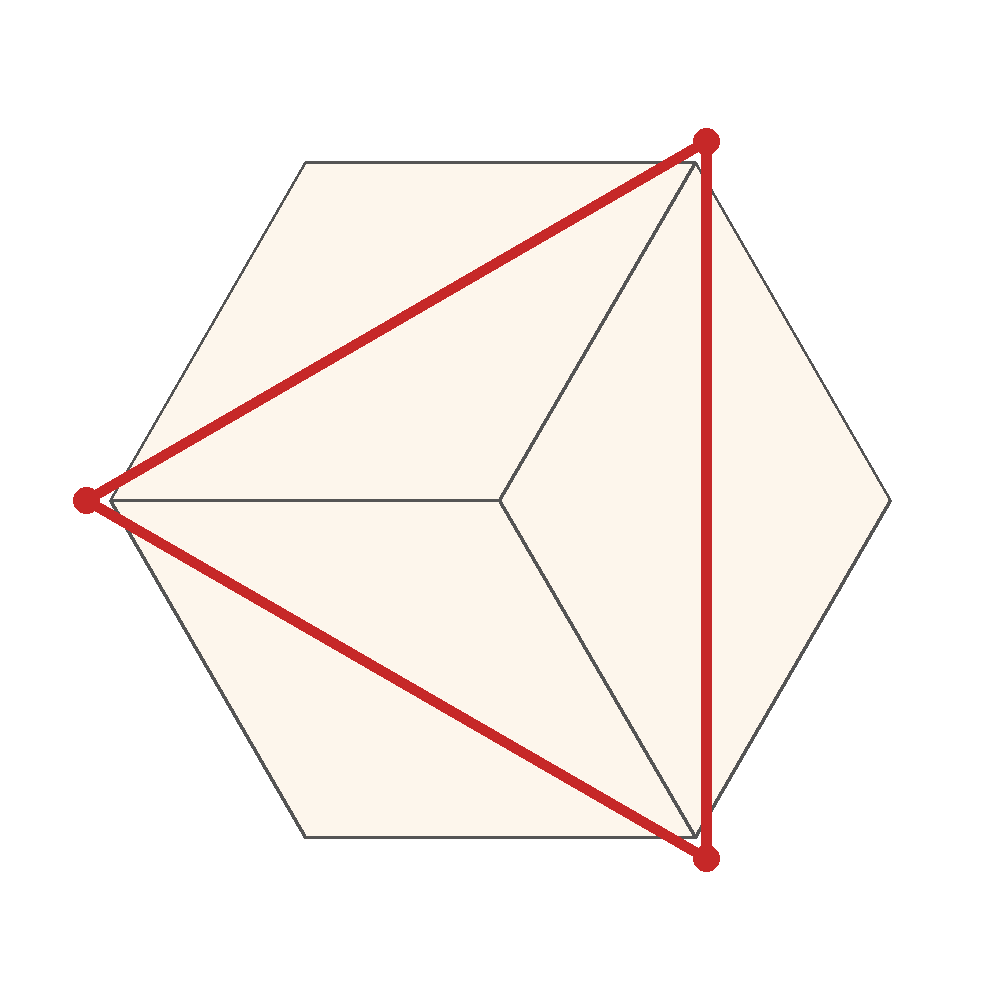
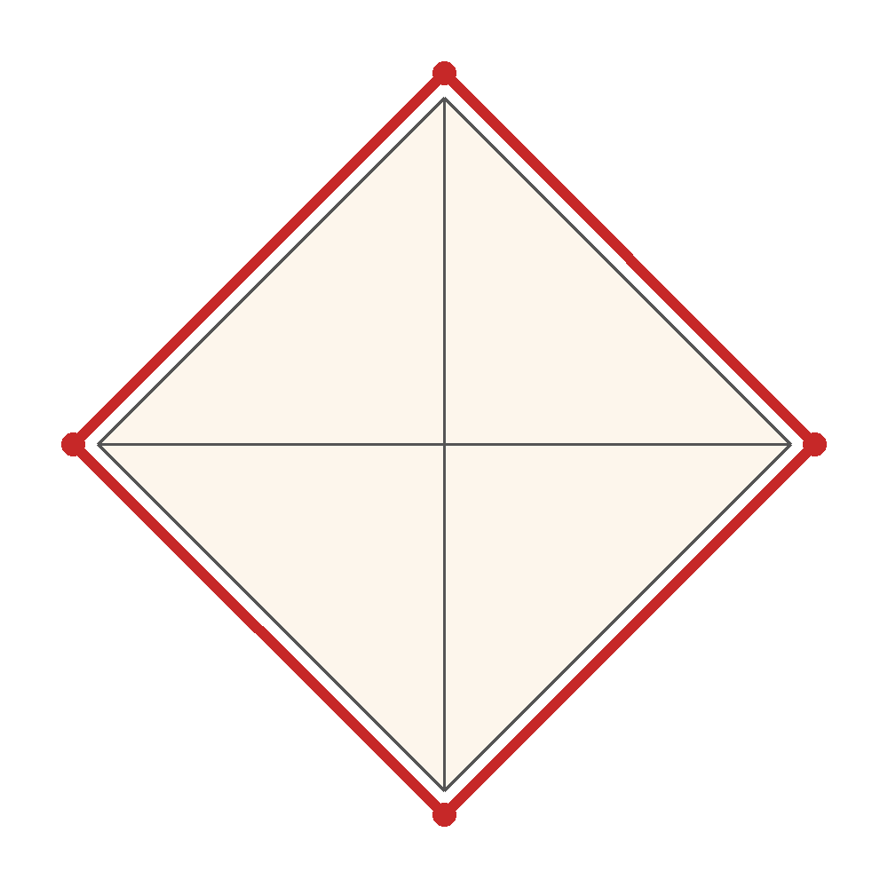
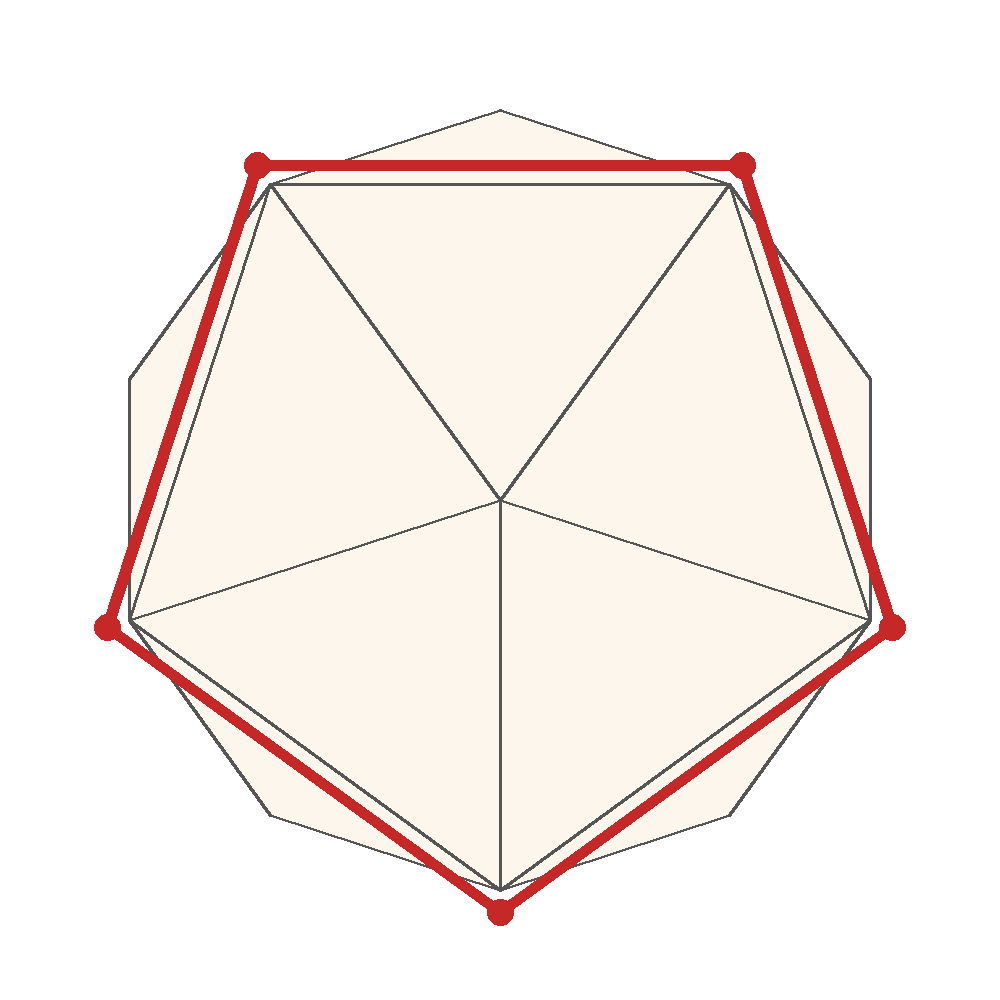

数学の絵本 第18話「正多面体はなぜ5つだけ？」の発展です
第18話では、正十二面体が輪ゴムの力で立ち上がる工作を紹介しました。では、ほかの正多面体でも同じことができるでしょうか。答えは、正六面体（立方体）・正八面体・正二十面体の3つでも「できる」です。このページの型紙は今回の書き下ろしで、立体を2つの「おわん」に分ける分け方と輪ゴムの通り道を、立体の正確な座標で計算して確かめてあります（おわんの型紙が重ならずに広がること、平らにつぶすと輪ゴムが伸びること）。
正十二面体は実際に作って確かめましたが、この3つの型紙は実作確認はこれからです。不具合が出るかもしれません。実際にご使用の際に不具合がありましたら、noteのコメント欄からお知らせください。
材料は3つとも共通です。板目紙などの厚紙、輪ゴム1本、はさみ。紙は、しっかりした厚紙がおすすめです。湿布薬の箱や、固めの和菓子の箱のような、身近な箱の板紙を展開しても作れます。
面は正方形6枚／辺12本／頂点8個。部品は「頂点のまわりに集まる正方形3枚」でできた、角（かど）の形のおわんです。

上から見た図。赤い輪が輪ゴム（三角形の輪になります）
型紙PDF（印刷用） 型紙PNG両手で平らにつぶして、手を離すと、輪ゴムの力で立方体に立ち上がります。手のひらの上でパッと開くようにしても面白いです。
面は正三角形8枚／辺12本／頂点6個。部品は「正三角形4枚」でできた、四角すい（ピラミッド）の形のおわんです。3つの中で、いちばん作りやすい形です。

上から見た図。赤い輪が輪ゴム（合わせ目の四角い溝にそって一周します）
型紙PDF（印刷用） 型紙PNG上下の頂点を持って平らにつぶし、手を離すと立ち上がります。つぶすと四角すいが平らに開くので、輪ゴムの伸びがいちばん分かりやすい形です。
面は正三角形20枚／辺30本／頂点12個。部品は「正三角形10枚」でできた、深いおわんです。正十二面体と仕組みがそっくりです。

上から見た図。赤い輪が輪ゴム（五角形の輪になります）
型紙PDF（印刷用） 型紙PNG両手で平らにつぶして、手を離すと立ち上がります。面の数が多いので、丸みにいちばん近い、ころんとした立ち上がり方をします。
正四面体は面が4枚しかないので、半分に分けると2枚ずつになり、「おわん」の形になりません。だから、この方法では立ち上がらせることができません。……本当にできないでしょうか？ 別の分け方や、別の仕掛けを考えるのが、発展の宿題です。